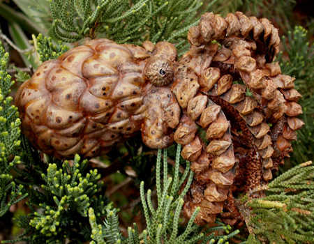

| Star Nosed Mole | Pacific NW Tree Octopus | Blobfish | |
|---|---|---|---|
| What does it look like? (draw or describe) | A small, stout, streamlined mammal with 22 pink, fleshy tentacles radiating from the nose in a star-like pattern. |  | |
| Where does it live? | Star-nosed Moles are found in a variety of habitats with moist soil, including woods, bogs, marshes, and fields. Frequently adjacent to water and in higher elevations. | The Pacific Northwest tree octopus (Octopus paxarbolis) can be found in the temperate rainforests of the Olympic Peninsula on the west coast of North America. | |
| What does it eat? | Earthworms and aquatic insects are the primary foods, but it also eats snails, crayfish, small amphibians, and fish. | he tree octopus can feed on a variety of prey including large insects and small rodents, which are abundant in their habitat. | |
| What are its natural predators? | Raptors, including screech, great horned, long-eared, barred, and barn owls, and red-tailed hawks; mammals such as striped skunks, weasels, minks, and foxes; and fish such as the northern pike prey on this mammal. | Seals, sea otters, sharks, and large fish | |
| What is one interesting fact about it? | Star-nosed moles can identify and eat food (bugs, mostly) in less than two-tenths of a second, taking a mere 8 milliseconds to decide whether an item is edible or not. They perform this feat in part due to the extremely efficient operation of their nervous systems, which convey information from the environment to the animal's brain at speeds approaching the physiological limit of neurons. | They are found to be of 33 centimeters in length and 6 feet in diameter. However, they are believed to be shy and moves with their tentacles. This process is known as 'tentaculation'. | |
| From which website(s) did you find your information? | www.eurekalert.org tn.gov |
Columbiatribune lisbdnet.com stillunfold.com |